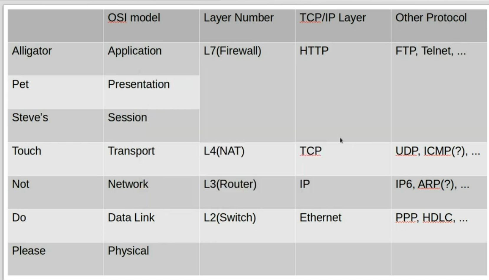

Please Do Not Touch Steve's Pet Alligator
OSI 모델을 보고 저런 문장을 떠올린게 너무 신기해서 웃음이 막 나왔다.
그렇지만 네트워크에서 정말 중요함을 느낀다.
Wireshark 에서 패킷을 잡아서 실제로 Ethernet -> Ip-> TCP(UDP) -> Http(s) 가 나왔을때 그렇게 신기하지 않을수가 없었다.
Ethernet헤더를 더 알려주셨는데 각 계층별 헤더에 대해 공부해야겠다는 생각이 든다.